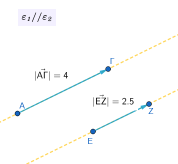
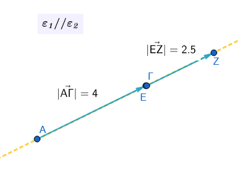
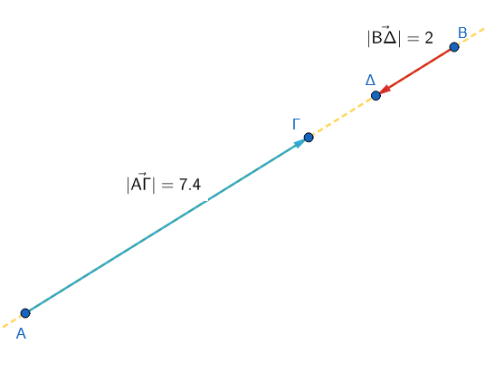
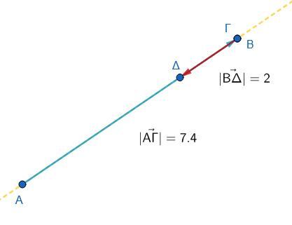
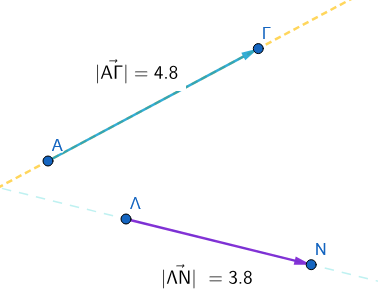
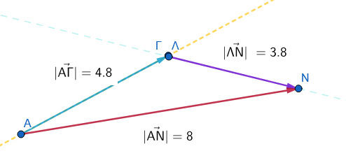
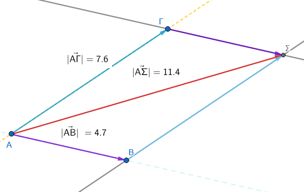
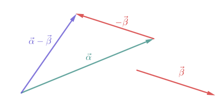
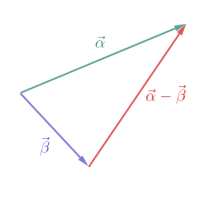
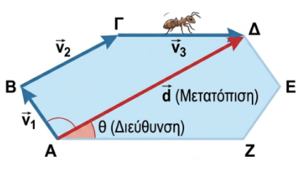

1 Άθροισμα και διαφορά διανυσμάτων
1.1 πρόσθεση διανυσμάτων
Η πρόσθεση διανυσμάτων μπορεί να γίνει με δύο βασικές μεθόδους, ανάλογα με το πώς είναι τοποθετημένα τα διανύσματα στο επίπεδο:
- Έχουν την ίδια κατεύθυνση (βρίσκονται στην ίδια ευθεία ή σε παράλληλες ευθείες) και ομόρροπα

μετακινούμε το ένα παράλληλα ώστε η αρχή του να συμπέσει με το τέλος του άλλου

τότε \(\vec{AΓ}+\vec{ΕΖ}=\vec{ΑΖ}\)
- αντίρροπα

μεταφέρουμε

Η πρόσθεση αντίρροπων διανυσμάτων είναι μια ειδική περίπτωση πρόσθεσης διανυσμάτων όπου τα διανύσματα βρίσκονται πάνω στην ίδια ευθεία (είναι συγγραμμικά) και έχουν αντίθετη φορά.
1: Κατανόηση των Αντίρροπων Διανυσμάτων Τα αντίρροπα διανύσματα είναι εκείνα που έχουν την ίδια διεύθυνση (είναι παράλληλα) αλλά αντίθετη φορά.
Αν έχουμε δύο διανύσματα \(\vec{α}\) και \(\vec{β}\) που είναι αντίρροπα, το \(\vec{β}\) μπορεί να γραφτεί ως \(\vec{β} = -k \cdot \vec{α}\), όπου \(k\) ένας θετικός αριθμός.
2: Πρόσθεση Για να προσθέσουμε δύο αντίρροπα διανύσματα, εφαρμόζουμε τον κανόνα της “διαδοχής”:
- Σχεδιάζουμε το πρώτο διάνυσμα \(\vec{α}\).
- Τοποθετούμε την αρχή του δεύτερου διανύσματος \(\vec{β}\) στο πέρας (στην άκρη) του \(\vec{α}\).
- Επειδή το \(\vec{β}\) έχει αντίθετη φορά, το διάνυσμα θα “επιστρέψει” πάνω στην ίδια ευθεία.
3: Μαθηματικός Υπολογισμός του Μέτρου
Το μέτρο του διανύσματος-αποτελέσματος (συνισταμένη \(\vec{s}\)) ισούται με τη διαφορά των μέτρων τους, και η φορά του είναι ίδια με τη φορά του διανύσματος που έχει το μεγαλύτερο μέτρο.
- Αν \(|\vec{α}| > |\vec{β}|\), τότε \(|\vec{s}| = |\vec{α}| - |\vec{β}|\) και η φορά είναι η ίδια με το \(\vec{α}\).
- Αν \(|\vec{β}| > |\vec{α}|\), τότε \(|\vec{s}| = |\vec{β}| - |\vec{α}|\) και η φορά είναι η ίδια με το \(\vec{β}\).
Τελικά Το άθροισμα δύο αντίρροπων διανυσμάτων είναι ένα νέο διάνυσμα με μέτρο ίσο με την απόλυτη διαφορά των μέτρων τους και φορά προς την κατεύθυνση του μεγαλύτερου σε μέτρο διανύσματος.
- Η μέθοδος του πολυγώνου: Μεταφέρουμε παράλληλα τα διανύσματα έτσι ώστε να γίνουν διαδοχικά (δηλαδή η αρχή του δεύτερου να συμπίπτει με το πέρας του πρώτου κ.ο.κ.).
Το άθροισμα είναι το διάνυσμα που έχει αρχή την αρχή του πρώτου και πέρας το πέρας του τελευταίου διανύσματος.


\(\vec{ΑΝ}=\vec{ΑΓ}+\vec{ΛΝ}\)
παρατηρήστε ότι το άθροισμα \(\vec{|AN|}\) στην περίπτωση αυτή δεν έχει μέτρο όσο το άθροισμα των μέτρων των επί μέρους διανυσμάτων \(\vec{|AΓ|}\) και \(\vec{|ΛΝ|}\).
- Η μέθοδος του παραλληλογράμμου: Χρησιμοποιείται όταν δύο διανύσματα έχουν κοινή αρχή. Σχηματίζουμε ένα παραλληλόγραμμο με πλευρές τα δύο διανύσματα. Το άθροισμά τους είναι η διαγώνιος του παραλληλογράμμου που ξεκινά από την κοινή τους αρχή.

\(\vec{ΑΣ}=\vec{ΑΒ}+\vec{ΑΓ}\)
Εξηγήστε γιατί.Στη Φυσική, το αποτέλεσμα της πρόσθεσης διανυσμάτων (π.χ. δυνάμεων) ονομάζεται συνισταμένη.
1.2 Διαφορά μεταξύ απόστασης και μετατόπισης
Η κύρια διαφορά τους είναι ότι η απόσταση είναι ένα βαθμωτό (αριθμητικό) μέγεθος, ενώ η μετατόπιση είναι διανυσματικό μέγεθος.
Πιο αναλυτικά:
* Απόσταση: Εκφράζει το συνολικό μήκος της διαδρομής που διένυσε ένα σώμα. Για παράδειγμα, λέμε ότι ένα πλοίο διένυσε 960 ναυτικά μίλια, χωρίς όμως να ξέρουμε προς τα πού κατευθύνθηκε.
* Μετατόπιση: Μας δείχνει ακριβώς πού ξεκίνησε και πού κατέληξε ένα σώμα, περιλαμβάνοντας τόσο το μήκος όσο και την κατεύθυνση. Για παράδειγμα, λέμε ότι το πλοίο μετατοπίστηκε 240 μίλια προς τον Νότο.
Είναι σημαντικό να θυμόμαστε ότι το μέτρο της μετατόπισης (η ευθεία απόσταση αρχικής και τελικής θέσης) δεν ταυτίζεται απαραίτητα με τη συνολική απόσταση που διανύθηκε.
1.3 Διαφορά μεταξύ διεύθυνσης και φοράς
Η διαφορά μεταξύ διεύθυνσης και φοράς είναι ουσιαστική για τον ορισμό ενός διανύσματος:
Διεύθυνση: Είναι η ευθεία πάνω στην οποία βρίσκεται το διάνυσμα ή οποιαδήποτε άλλη ευθεία παράλληλη προς αυτή. Φανταστείτε την ως τον “δρόμο” πάνω στον οποίο κινείται το διάνυσμα.
Φορά: Καθορίζεται από το σημείο αρχής και το σημείο τέλους (πέρας) του διανύσματος. Δείχνει προς ποια από τις δύο δυνατές πλευρές της ευθείας κατευθύνεται το βέλος (π.χ. από το Α προς το Β ή από το Β προς το Α).
Συνδυαστικά, η διεύθυνση μαζί με τη φορά προσδιορίζουν την κατεύθυνση ενός διανύσματος.
1.4 Διαφορά δύο διανυσμάτων
Η διαφορά δύο διανυσμάτων \(\vec{α}\) και \(\vec{β}\) ορίζεται ως η πρόσθεση του πρώτου διανύσματος με το αντίθετο του δεύτερου.
Δηλαδή: \(\vec{α} - \vec{β} = \vec{α} + (-\vec{β})\).
1: Κατασκευή του Αντίθετου Διανύσματος Για να αφαιρέσουμε το διάνυσμα \(\vec{β}\) από το \(\vec{α}\), πρέπει πρώτα να βρούμε το αντίθετο διάνυσμα του \(\vec{β}\), το οποίο συμβολίζουμε ως \(-\vec{β}\).

Το \(-\vec{β}\) έχει το ίδιο μέτρο και την ίδια διεύθυνση με το \(\vec{β}\), αλλά την ακριβώς αντίθετη φορά.
2: Εφαρμογή του Κανόνα της Πρόσθεσης Μετατρέπουμε την αφαίρεση σε πρόσθεση: \(\vec{α} + (-\vec{β})\).
Τοποθετούμε την αρχή του \(-\vec{β}\) στο πέρας του \(\vec{α}\).
Το διάνυσμα που ξεκινά από την αρχή του \(\vec{α}\) και καταλήγει στο πέρας του \(-\vec{β}\) είναι η διαφορά \(\vec{d} = \vec{α} - \vec{β}\).
3: Εναλλακτικός Κανόνας (Κοινή Αρχή) Αν τοποθετήσουμε τα διανύσματα \(\vec{α}\) και \(\vec{β}\) έτσι ώστε να έχουν την ίδια αρχή, τότε η διαφορά \(\vec{α} - \vec{β}\) είναι το διάνυσμα που έχει αρχή το πέρας του \(\vec{β}\) και πέρας το πέρας του \(\vec{α}\). (Προσοχή: το βέλος δείχνει πάντα προς το διάνυσμα από το οποίο αφαιρούμε).

Τελικά Η διαφορά \(\vec{α} - \vec{β}\) είναι ένα νέο διάνυσμα που προκύπτει από την πρόσθεση του \(\vec{α}\) με το αντίθετο του \(\vec{β}\), ή γεωμετρικά ως το διάνυσμα που συνδέει τα πέρατα των δύο διανυσμάτων όταν αυτά έχουν κοινή αρχή.
Η αναγωγή της αφαίρεσης σε πρόσθεση.
Στα διανύσματα δεν υπάρχει “αφαίρεση” με την παραδοσιακή έννοια των αριθμών, αλλά η έννοια της πρόσθεσης μιας αντίθετης κατεύθυνσης. Αυτό είναι εξαιρετικά χρήσιμο στη Φυσική για τον υπολογισμό μεταβολών μεγεθών, όπως η μεταβολή της ταχύτητας (\(Δ\vec{v} = \vec{v}_{Τελική} - \vec{v}_{Αρχική}\)), η οποία ορίζει την επιτάχυνση.
1.5 Ασκήσεις
- Άθροισμα σε Παραλληλόγραμμο: Σε παραλληλόγραμμο ΑΒΓΔ, υπολογίστε τα αθροίσματα:
α) \(\vec{AB} + \vec{AΔ}\) και
β) \(\vec{AB} + \vec{BΓ}\).
Διαφορά με Κοινή Αρχή: Έστω παραλληλόγραμμο ΑΒΓΔ με κέντρο Ο. Συγκρίνετε τις διαφορές διανυσμάτων \(\vec{BO} - \vec{BA}\) και \(\vec{BΓ} - \vec{BO}\). Τι παρατηρείτε;
Μηδενικό Διάσυσμα: Σε ένα τυχαίο τετράπλευρο ΑΒΓΔ, να αποδείξετε ότι το άθροισμα \(\vec{AB} + \vec{BΓ} + \vec{ΓΔ} + \vec{ΔΑ}\) ισούται με το μηδενικό διάνυσμα \(\vec{0}\).
Ένα σώμα μετατοπίζεται από το σημείο Α στο σημείο Β και στη συνέχεια επιστρέφει στο σημείο Α. Ποιο είναι το συνολικό διάνυσμα μετατόπισης και ποιο το μέτρο του;
(Συγγραμμικά - Ομόρροπα): Δύο δυνάμεις \(\vec{F_1}\) και \(\vec{F_2}\) έχουν την ίδια διεύθυνση και φορά, με μέτρα 12 N και 5 N αντίστοιχα. Υπολογίστε το μέτρο της συνισταμένης δύναμης \(\vec{F_{ολ}} = \vec{F_1} + \vec{F_2}\).
(Συγγραμμικά - Αντίρροπα): Ένας άνθρωπος σπρώχνει ένα κιβώτιο προς τα δεξιά με δύναμη \(F_1 = 20\) N, ενώ ένας δεύτερος το σπρώχνει προς τα αριστερά με δύναμη \(F_2 = 15\) N. Βρείτε το μέτρο και τη φορά της συνολικής δύναμης.
(Κανόνας Τριγώνου): Σχεδιάστε δύο τυχαία διανύσματα \(\vec{a}\) και \(\vec{b}\) που δεν είναι παράλληλα. Σχεδιάστε το άθροισμά τους \(\vec{s} = \vec{a} + \vec{b}\) χρησιμοποιώντας τον κανόνα του τριγώνου.
(Διαφορά): Δίνονται δύο διανύσματα \(\vec{a}\) (προς τα πάνω) και \(\vec{b}\) (προς τα δεξιά). Σχεδιάστε το διάνυσμα της διαφοράς \(\vec{d} = \vec{a} - \vec{b}\).
(Κάθετα Διανύσματα): Ένα πλοίο κινείται 3 km Βόρεια (\(\vec{d_1}\)) και μετά 4 km Ανατολικά (\(\vec{d_2}\)).
α) Σχεδιάστε τα διανύσματα.
β) Υπολογίστε το μέτρο της συνολικής μετατόπισης (: Πυθαγόρειο Θεώρημα).
(Πολλαπλασιασμός με αριθμό): Αν το διάνυσμα \(\vec{v}\) έχει μέτρο 4 m/s και φορά προς το Βορρά, περιγράψτε το διάνυσμα \(\vec{u} = 3\vec{v}\) και το διάνυσμα \(\vec{w} = -2\vec{v}\).
(Μηδενικό Διάνυσμα): Αν για τρία διανύσματα ισχύει η σχέση \(\vec{a} + \vec{b} + \vec{c} = \vec{0}\), τι σχήμα θα σχηματίσουν αν τα τοποθετήσουμε το ένα μετά το άλλο (διαδοχικά);
Ένα σημείο \(K\) βρίσκεται πάνω σε ένα χαρτί. Το μετατοπίζουμε κατά το διάνυσμα \(\vec{u}\) και πάει στη θέση \(Λ\). Μετά, το σημείο \(Λ\) το μετατοπίζουμε ξανά κατά το ίδιο διάνυσμα \(\vec{u}\) και πάει στη θέση \(M\). Πόσες φορές το διάνυσμα \(\vec{u}\) είναι το συνολικό διάνυσμα \(\vec{KM}\);
Το μυρμήγκι περπατάει Ένα μυρμήγκι περπατάει πάνω στις πλευρές ενός εξαγώνου \(ABΓΔEΖ\). Ξεκινάει από το \(A\), πάει στο \(B\), μετά στο \(Γ\), μετά στο \(Δ\) και σταματάει εκεί. Γράψε το άθροισμα των διανυσμάτων της διαδρομής του και βρες ποιο είναι το τελικό διάνυσμα της μετατόπισής του.

Συμπλήρωση Κενών Δίνονται τέσσερα σημεία Π, Ρ, Σ και Τ. Να συμπληρώσετε τις ισότητες:
α) \(\vec{Π P} + \vec{P...} = \vec{Π Σ}\)
β) \(\vec{PΣ} = \vec{P...} + \vec{... Σ}\)
γ) \(\vec{... Σ} - \vec{... Π} = \vec{Π Σ}\)
δ) \(\vec{Π Σ} = \vec{Π T} + \vec{T...} + \vec{... Σ}\)
Βήμα-βήμα Λύση:
- Χρήση κανόνα : \(\vec{Π P} + \vec{PΣ} = \vec{Π Σ}\).
- Ανάλυση με ενδιάμεσο σημείο Τ: \(\vec{PΣ} = \vec{PT} + \vec{TΣ}\). ή \(vec{ΡΣ}=Vec{ΡΠ}+vec{ΠΣ}\)
- Διαφορά διανυσμάτων με κοινή αρχή το Ρ: \(\vec{PΣ} - \vec{PΠ} = \vec{Π Σ}\).
- Διαδοχικά διανύσματα: \(\vec{Π Σ} = \vec{Π T} + \vec{TP} + \vec{PΣ}\).
- (Γεωμετρική Ερμηνεία) Η ισότητα \(\vec{XZ} = \vec{XY} + \vec{X \Omega}\) είναι σωστή αν το σχήμα \(XY Z \Omega\) είναι:
Α: Τυχαίο τετράπλευρο.
Β: Παραλληλόγραμμο με διαγώνιο την XZ.
Γ: Τρίγωνο με διάμεσο την XZ.
Βήμα-βήμα Λύση:
- Ο κανόνας του παραλληλογράμμου ορίζει ότι το άθροισμα δύο διανυσμάτων με κοινή αρχή είναι η διαγώνιος του παραλληλογράμμου που σχηματίζουν.
- Άρα, το \(XY Z \Omega\) πρέπει να είναι παραλληλόγραμμο. (Σωστό το Β)
- (Παραλληλόγραμμο & Σημείο Ο) Σε παραλληλόγραμμο ΕΖΗΘ και τυχαίο σημείο Ο, επιλέξτε το σωστό:
α) \(\vec{EZ} + \vec{EΘ} =\) ; (Επιλογές: \(\vec{EH}, \vec{ZΘ}, \vec{0}\))
β) \(\vec{OE} + \vec{ZH} =\) ; (Επιλογές: \(\vec{OH}, \vec{OΘ}, \vec{EΘ}\))
Βήμα-βήμα Λύση:
- Στο παραλληλόγραμμο \(\vec{EZ} + \vec{EΘ} = \vec{EH}\) (κανόνας παραλληλογράμμου).
- Επειδή \(\vec{ZH} = \vec{EΘ}\), έχουμε \(\vec{OE} + \vec{EΘ} = \vec{OΘ}\).
Στο παραλληλόγραμμο \(ABΓΔ\), να εκφράσετε το διάνυσμα \(\vec{AΓ}\) ως άθροισμα των διανυσμάτων \(\vec{AB}\) και \(\vec{AΔ}\).
Σε ένα τρίγωνο \(ABΓ\), θεωρούμε τα μέσα \(M\) και \(N\) των πλευρών \(AB\) και \(AΓ\) αντίστοιχα. Να αποδειχθεί ότι \(\vec{MN} = \dfrac{1}{2}\vec{BΓ}\).
Λύση
- Εκφράζουμε το διάνυσμα \(\vec{MN}\) ως διαφορά: \(\vec{MN} = \vec{AN} - \vec{AM}\).
- Επειδή το \(N\) είναι μέσο της \(AΓ\), έχουμε \(\vec{AN} = \dfrac{1}{2}\vec{AΓ}\).
- Επειδή το \(M\) είναι μέσο της \(AB\), έχουμε \(\vec{AM} = \dfrac{1}{2}\vec{AB}\).
- Άρα, \(\vec{MN} = \dfrac{1}{2}\vec{AΓ} - \dfrac{1}{2}\vec{AB} = \dfrac{1}{2}(\vec{AΓ} - \vec{AB})\).
- Από τον κανόνα του τριγώνου, \(\vec{AΓ} - \vec{AB} = \vec{BΓ}\).
- Επομένως, \(\vec{MN} = \dfrac{1}{2}\vec{BΓ}\).
- Στο παραλληλόγραμμο \(ABΓΔ\), να υπολογίσετε το άθροισμα \(\vec{AB} + \vec{AΔ} + \vec{Γ A}\).
Λύση
- Ομαδοποιούμε τα διανύσματα: \((\vec{AB} + \vec{AΔ}) + \vec{Γ A}\).
- Από τον κανόνα του παραλληλογράμμου, \(\vec{AB} + \vec{AΔ} = ....................\).
- ……………………………………………….
Στο τετράπλευρο \(ABΓΔ\), να αποδειχθεί ότι \(\vec{AB} + \vec{BΓ} + \vec{ΓΔ} + \vec{Δ A} = \vec{0}\).
Σε ένα κανονικό εξάγωνο \(ABΓΔ EZ\) με κέντρο \(O\), να εκφράσετε το διάνυσμα \(\vec{AB} + \vec{AΓ} + \vec{AΔ} + \vec{AE} + \vec{AZ}\) συναρτήσει του \(\vec{AO}\).
Σε αυτά τα προβλήματα, δοκιμάστε πρώτα να κάνετε ένα πρόχειρο σχήμα (τα διανύσματα) και ακολουθήστε τους κανόνες.
ΚΑΛΗ ΜΕΛΕΤΗ !